Research Log · Mechanistic Interpretability
Training per-layer affine maps on Gemma-2-2B that decompose residual-stream activations into an embedding-inherited part and an in-context part — and asking what that decomposition buys us for probing and sparse dictionaries.
It all starts with one object: a linear map P that predicts a layer's activations straight from the token embedding — a "flipped" tuned lens (a normal tuned lens goes hidden → logits; this goes token → hidden). Everything downstream is a different question asked of P.
First I studied what P fails to reconstruct — the in-context residual r = h − P[token] — as the interesting signal (day-of-week geometry, truth directions). Then I used what P predicts to residualize sparse autoencoders and ask whether removing the token-predictable part yields less trivial, more abstract features. The map is the spine of the whole project.
Built the core pipeline — cache Gemma-2-2B activations, train a linear map token → activation across layers, and dissect where it reconstructs badly. First look at the residual error as signal, not noise.
The tuned lens (Belrose et al. 2023) learns an affine probe from each layer's hidden state to the output distribution, showing hidden states are decodable moving predictions. I flipped the direction — predict the hidden state from the static token embedding. If a large part of the residual stream is just a linear image of token identity, that part carries no in-context computation, and the interesting, context-dependent signal is exactly the residual the map can't explain. Charting error by token and by position is the first measurement of how much of layer 13 is token-static vs. contextual.
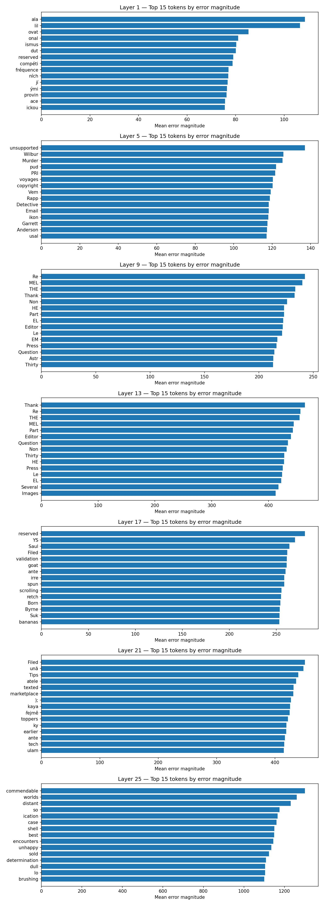
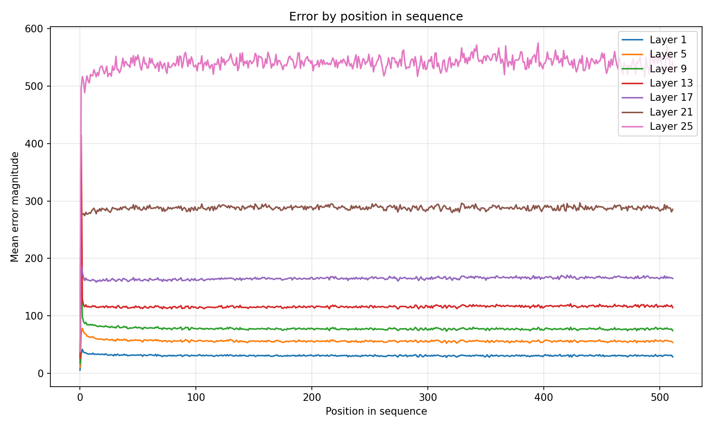
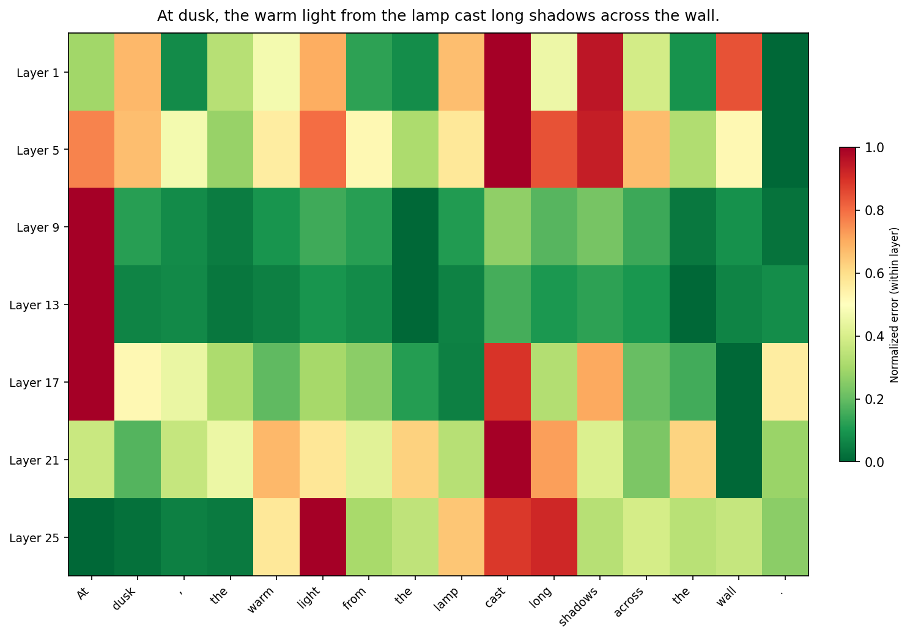
Zoomed into a concrete concept — days of the week — and asked how the model geometrically arranges them. PCA of day embeddings / activations, mean-only projections, and the first hints of a circular structure.
LLMs hold linear representations of space and time (Gurnee & Tegmark 2023), and days-of-week are the canonical case where the representation is not a single line but a circle — later shown to be an exact ring used for modular arithmetic (Engels et al. 2024). Days are a clean, closed, 7-element concept: an ideal probe for what the in-context residual geometry looks like once the token-static part is stripped. PCA on day tokens tests whether the ring lives in the raw activation or emerges only in the residual.
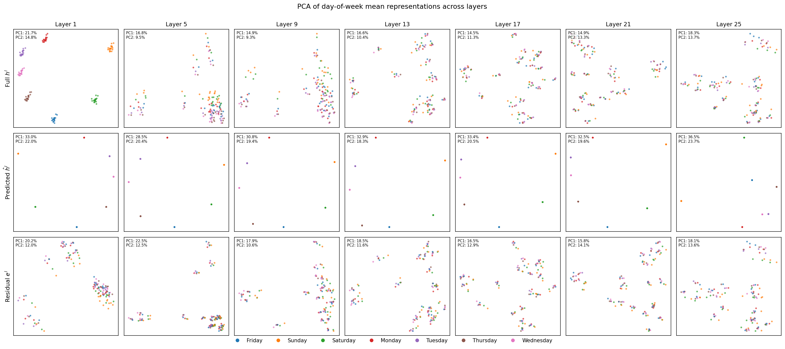
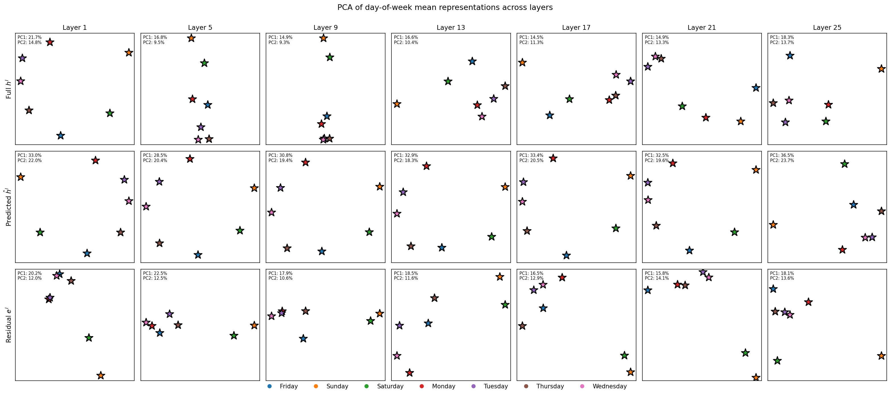
Two connected probing threads. First, fit an explicit circular probe to day representations (does the model lay days on a ring?). Then pivoted to the Geometry of Truth setup — training truth probes on cities and testing cross-dataset generalization.
A PCA picture is suggestive but not a claim. A probe that explicitly fits a circle tests whether the ring is genuinely recoverable as a low-dimensional linear structure, following the multi-dimensional-feature framing of Engels et al. (2024). Truth is the next, subtler contextual concept: the Geometry of Truth (Marks & Tegmark 2023) shows a linear "truth" direction exists but is easily confounded, and their negation / cross-dataset transfer is the standard test of whether a probe found truth or a surface correlate — which sets up the confound stress-test in Week 4.
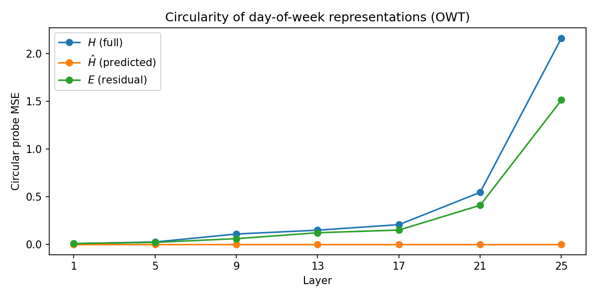
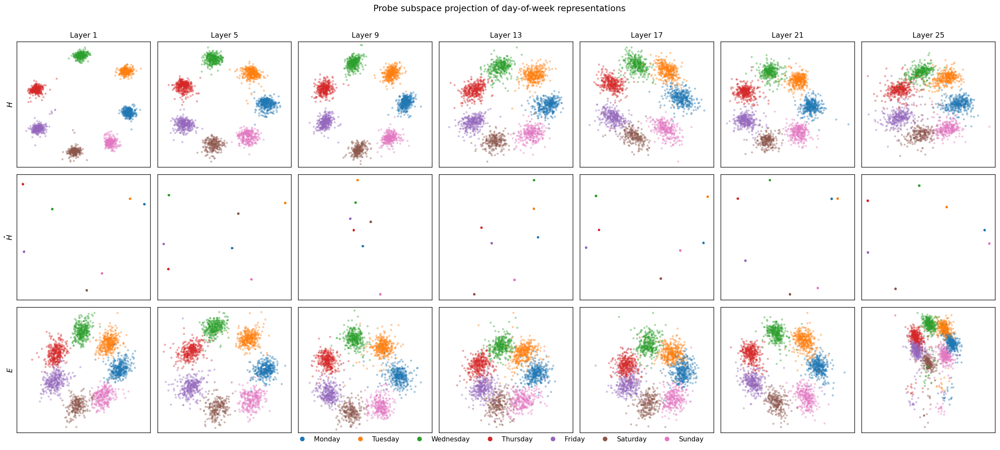
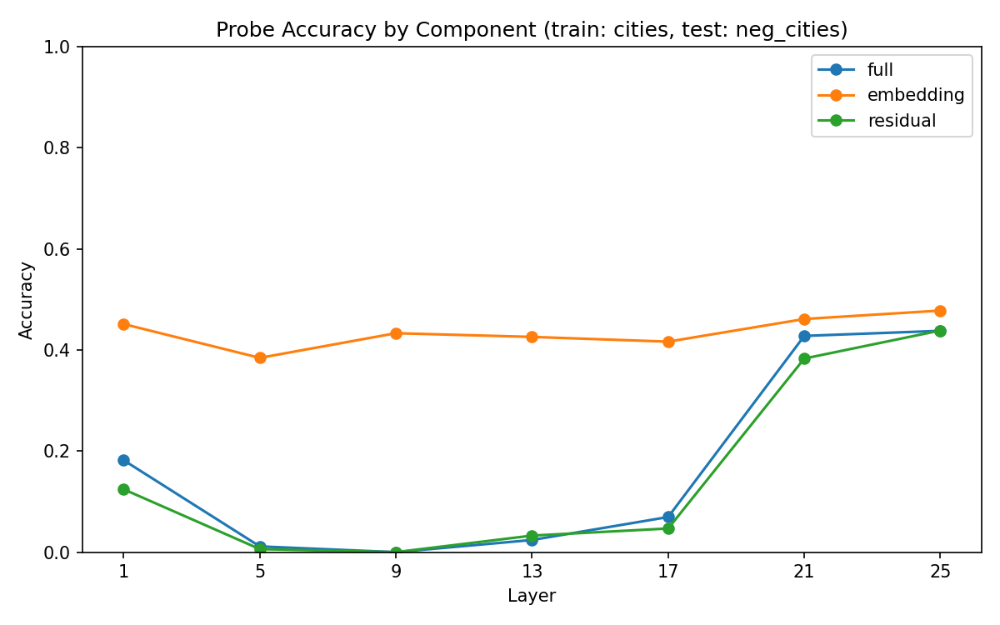
Pushed the truth work into a 7×7 probe grid (layers × representation type: embedding / residual / full) with deliberately confounded datasets, to test what the probe really keys on. Then a hard pivot: "atoms of discourse" — treating weight-sparse embedding dimensions as hyperedges over tokens and clustering them.
The Geometry of Truth's core lesson is misalignment from correlational inconsistency — a probe can score high while keying on a spurious correlate. The 7×7 grid over embedding / residual / full with deliberately confounded datasets is exactly the "is it reading truth or the confound?" test, and asks where the contextual signal lives — reconnecting to the embedding-vs-residual split. The pivot: "atoms of discourse" (Arora et al. 2018) show embeddings are sparse superpositions of a few semantic atoms, and weight-sparse transformers (Gao et al. 2025) give a model whose embedding dims are already sparse ≈ SAE codes — so the atoms can be read straight off the weights as a hypergraph, no SAE training needed. This nudged the project from probing toward sparse dictionaries.
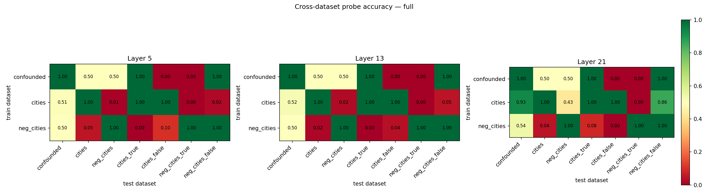
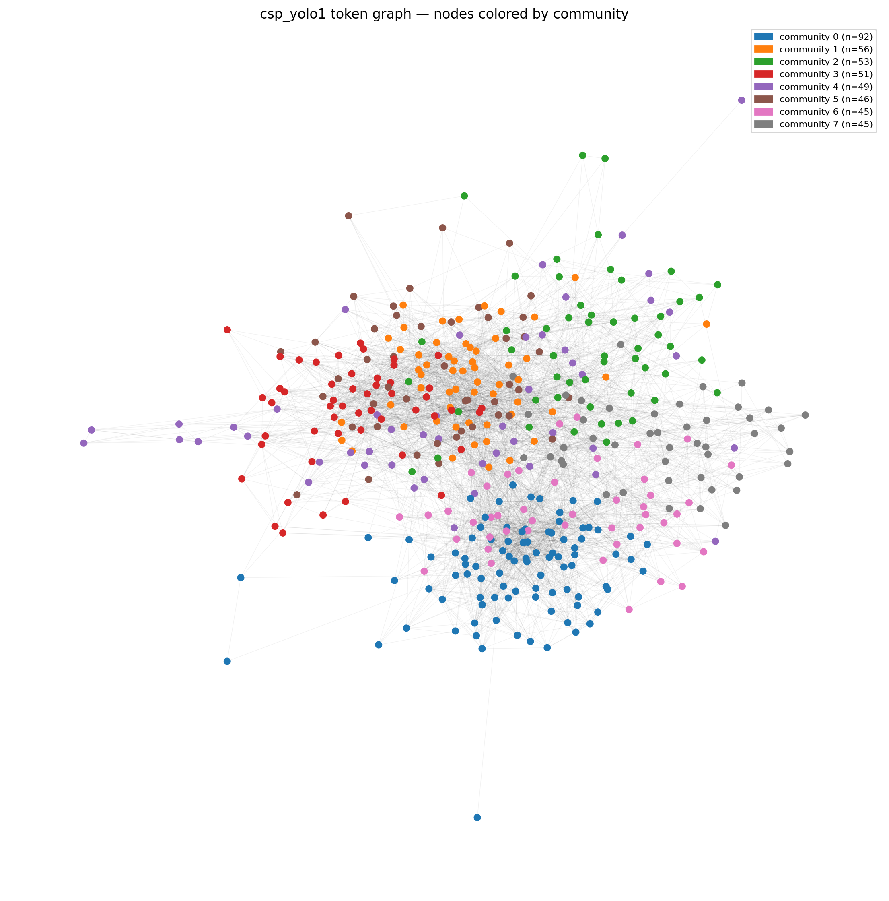
Built out real SAE training and validated it before trusting any interpretability result — JumpReLU SAEs with L0 / sparsity-coefficient sweeps, seed-stability checks, and convergence at increasing token budgets (150M → 300M → 600M).
To ask the real question — does removing the token-static part change the dictionary of features? — I first need SAEs I can trust. SAEs decompose activations into monosemantic features, but they're famously sensitive to training choices, so I built on the two sparsity-control lines that made them reliable: JumpReLU (Rajamanoharan et al. 2024) and TopK (Gao et al. 2024). Seed-stability and reconstruction-sparsity sweeps come before any interpretability claim — you can't trust a result built on an untrusted SAE.
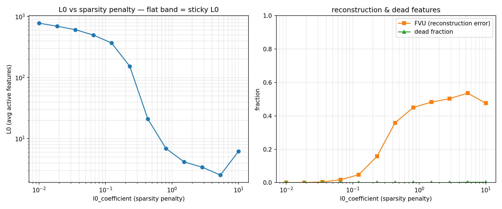
The central question: does an SAE trained on the residual r = h − P[token] learn fewer "trivial" single-token features than one trained on the full h? Trained matched full vs residual BatchTopK SAEs (16k feats, k=64, 50M tokens), built neuronpedia-style dashboards, and measured triviality carefully.
SAE dictionaries are cluttered with "trivial" single-token detectors that arguably reflect tokenization, not computation. If much of layer 13 is a linear image of the token (my map P), then training the SAE on the residual r = h − P[token] should spend capacity on contextual structure and waste fewer features on token identity. This is the project's central hypothesis — and the same motivation as Tokenized SAEs (Dooms & Wilhelm 2025), which adds per-token biases to peel token reconstruction off feature reconstruction.
Result: NULL on triviality The durable output was the methodology, not the headline.
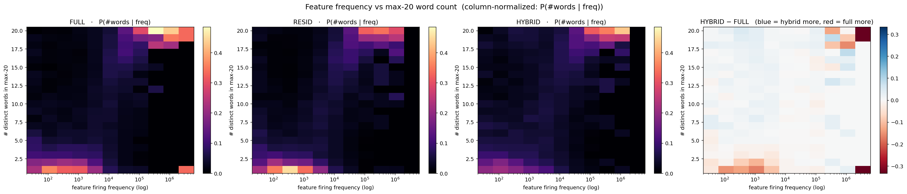
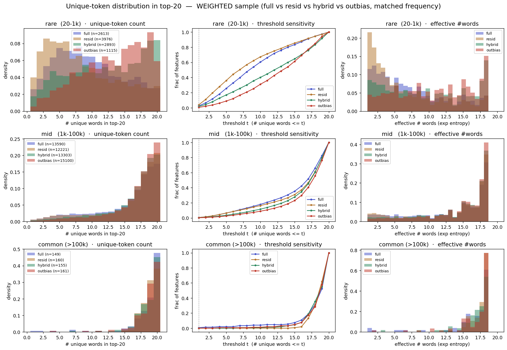
Nathan's fix turned the null partly positive: instead of a frozen map, train the map jointly with the SAE end-to-end on h. This gives better reconstruction at matched sparsity AND a less trivial dictionary. Then an LLM judge tested whether "less trivial" actually means "more abstract."
A frozen, pre-fit map is a blunt instrument; letting the map train jointly with the SAE (end-to-end on h) lets the two coordinate — the learned-per-token-bias move of Tokenized SAEs (Dooms & Wilhelm 2025). But word-count "triviality" only measures lexical spread — it can't separate a genuinely abstract feature (e.g. "negation") from noise that happens to fire on many words. Auto-interpretability with an LLM judge — OpenAI's neuron-explanation recipe (Bills et al. 2023) and Anthropic's Scaling Monosemanticity (Templeton et al. 2024) — is the standard way to score feature quality, so I pointed it at abstractness.
Positive: reconstruction + de-trivializationNull: abstractness
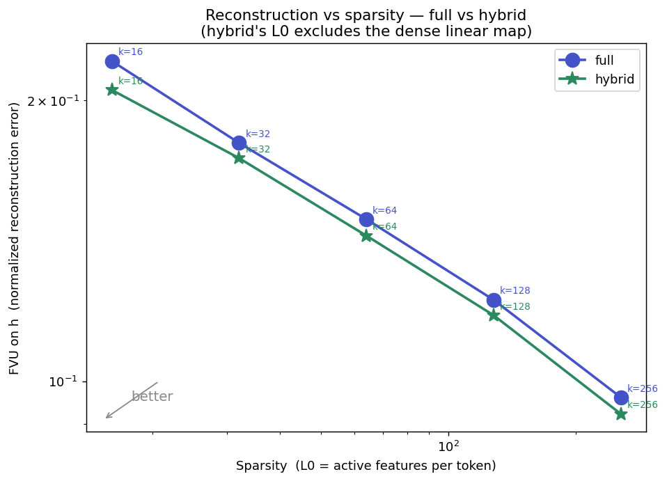
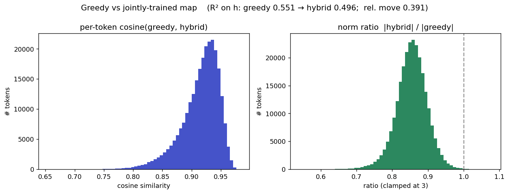
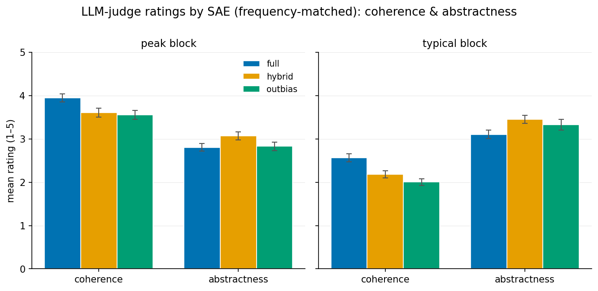
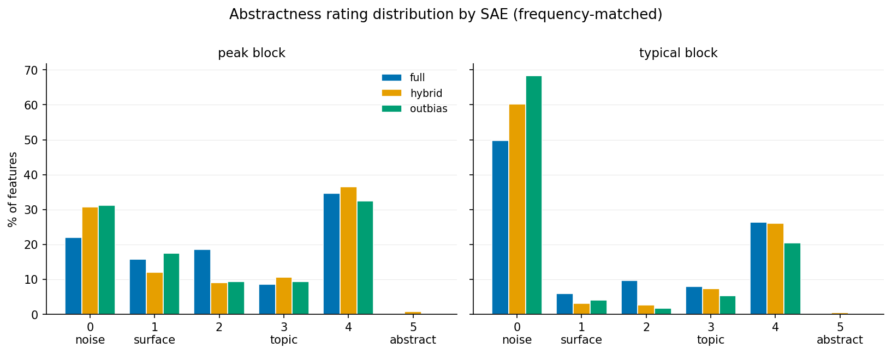
| full | Baseline: SAE trained directly on the activation h. |
| resid | SAE trained on the residual r = h − P[token], with the map frozen. |
| hybrid | Encoder sees the residual; map is trained jointly with the SAE, reconstructing h end-to-end. |
| outbias | Encoder sees full h; the map is added only at the output. Isolates "input vs target" — closest to Tokenized SAEs (arXiv:2502.17332). |
Later reframed as the "skip-embed" family (pretrained-skip / residual-encoder / raw-encoder), vs a plain top-k SAE.
A null on abstractness is only trustworthy if the judge is trustworthy. So I made the rubric explicit, hand-labeled a blinded, SAE-balanced validation set myself, and compared human vs judge axis-by-axis before re-running the full batch.
An LLM judge is only evidence if it agrees with humans — Scaling Monosemanticity (Templeton et al. 2024) validates its auto-interp scores against human labels for exactly this reason. Before trusting a null on abstractness across three SAEs, I needed a written, reproducible rubric, a blinded human-vs-judge agreement check, and a held-out re-validation so any rubric fix isn't graded on the features it was tuned on.
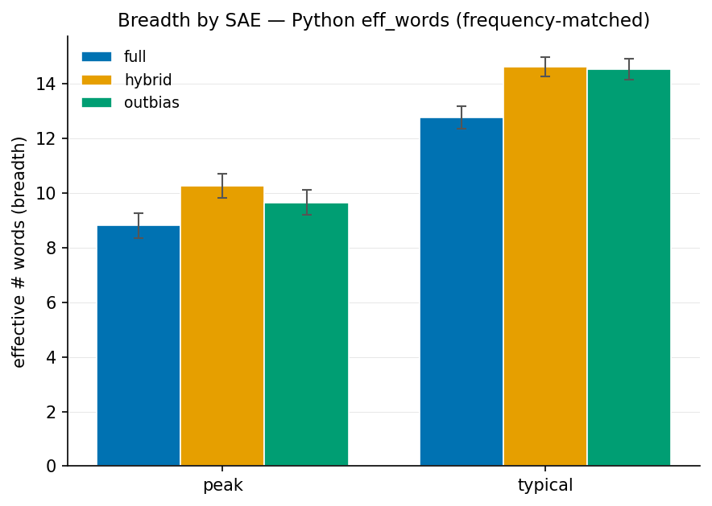
Rebuilt the whole pipeline to be portable: generate activations at run-time instead of caching giant tensors, and push trained SAEs + maps to HuggingFace so any fresh GPU pod can pull them. Retrained all four variants at 200M tokens.
Not a science week — a prerequisite one. The results so far lived on one specific cached box; scaling to more SAE variants, more tokens, and the coming probing experiments needed a portable pipeline (runtime activations, HuggingFace-hosted checkpoints, one-shot pod setup) so any GPU could reproduce and extend the work. Infra debt paid down before the next round.
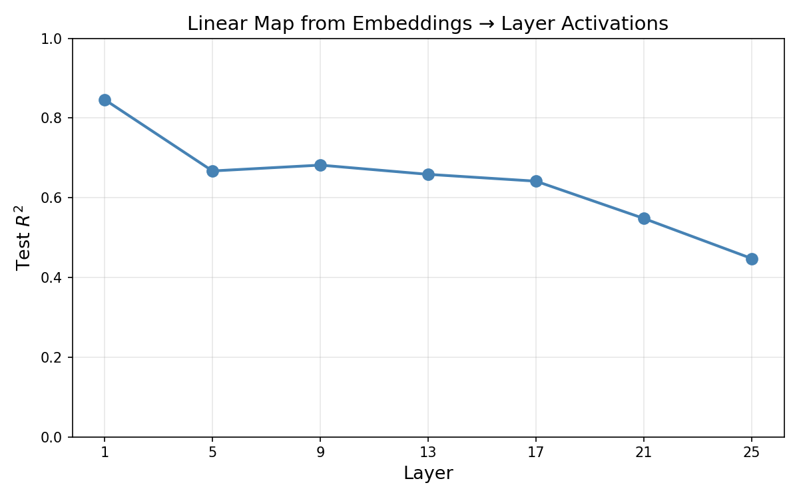
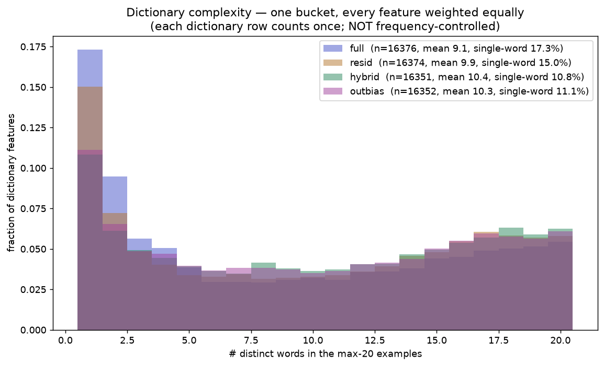
Moved from "are features trivial?" to "do the features encode useful concepts?" — reproducing the probing protocol from the Temporal-SAE paper (arXiv:2511.05541, Fig 3): how well can a k-sparse probe on SAE features recover a semantic label (topic/domain) vs a syntactic one, and does skip-embed help?
The judge said the map makes features broader but not more abstract — leaving open whether the decomposition makes them more useful. Sparse probing (Gurnee et al. 2023) is the standard way to measure how much task-relevant information a small set of features linearly carries, and the Temporal-SAE paper (2025) turns it into a clean semantic-vs-syntactic benchmark. Reproducing their Fig-3 protocol on my skip-embed SAEs asks the sharper question: does moving token-static structure into the map free up features that better encode concepts (topic / domain), not just spread over more words?
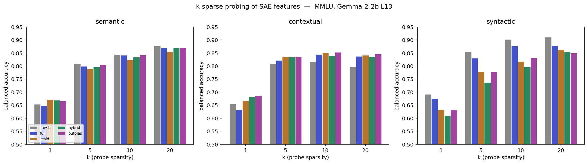
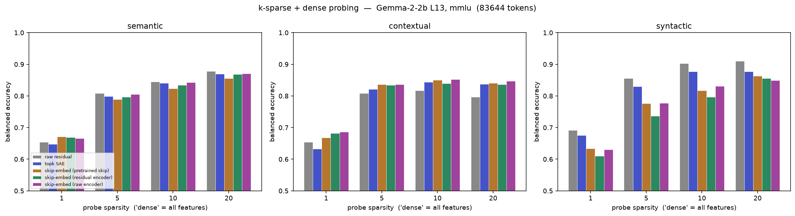
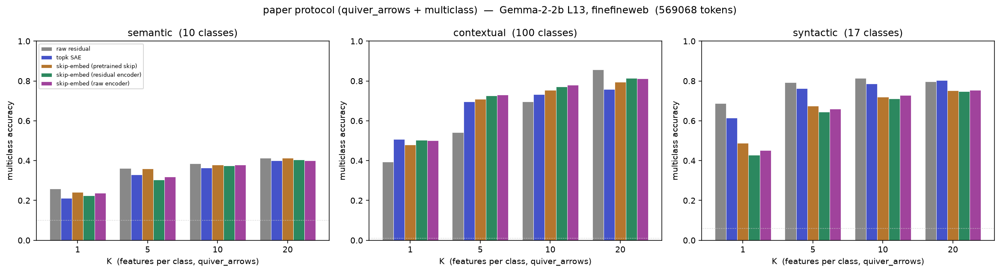
{kind=link}
{kind=link}
{kind=link}
{kind=link}
{kind=link}
{kind=link}
{kind=link}
{kind=link}
{kind=link}
{kind=link}
{kind=link}
{kind=link}
{kind=link}
{kind=link}
{kind=link}
{kind=link}
{kind=link}
{kind=link}
{kind=link}
{kind=link}
{kind=link}
{kind=link}
{kind=link}